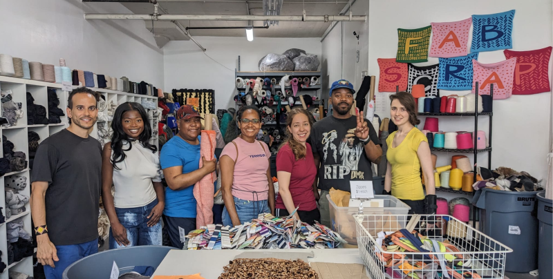
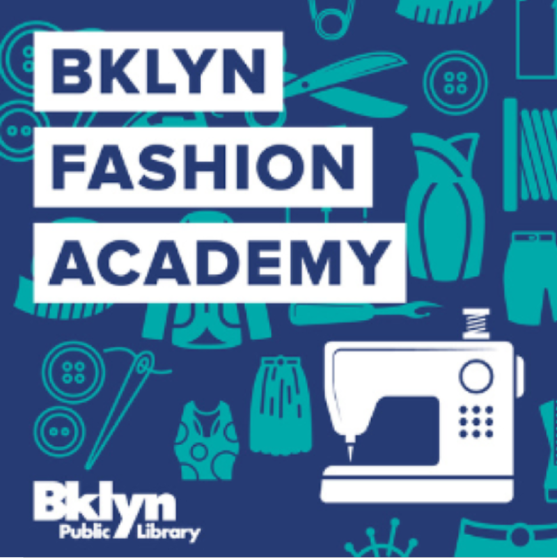
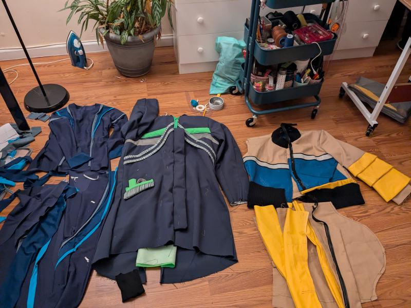
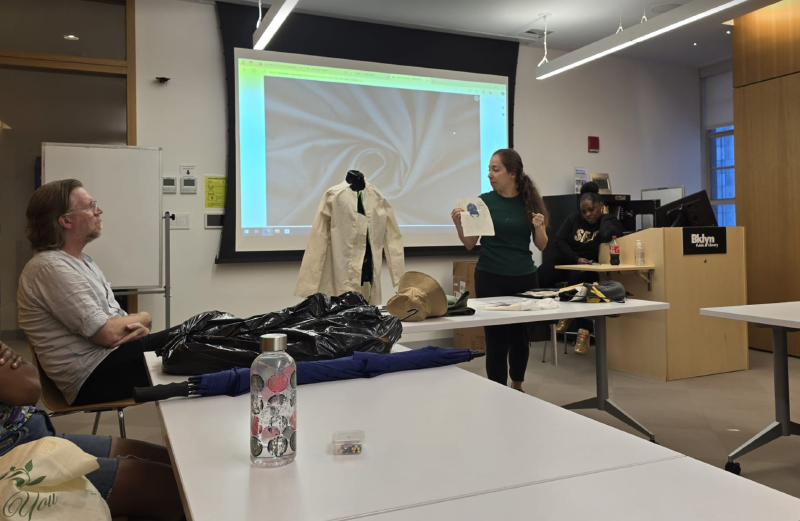
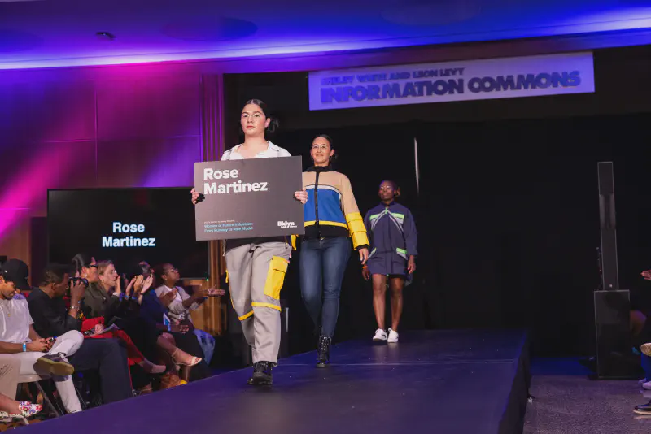
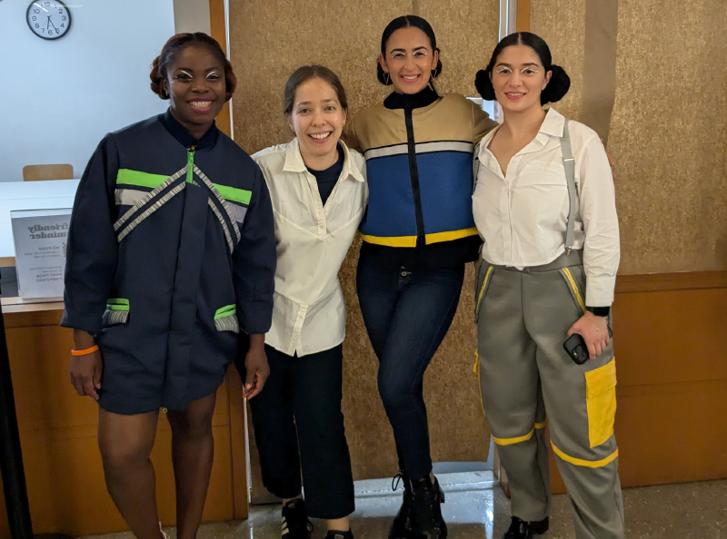

Nine Things You Should Know About the BKLYN Fashion Academy
What I Wish I Knew Before Starting
What I Wish I Knew Before Starting

Do you dream of seeing your designs on a runway, launching a fashion line, or joining a community of like-minded creatives? For aspiring designers who are ready to leap into the world of fashion, the BKLYN Fashion Academy (BFA) offers a rare, intensive journey to transform your vision into reality. But what makes this program so different, so highly regarded?

The Brooklyn Fashion Academy isn’t about beating the designer next to you; it’s about learning together, side by side, in a community-driven environment. You’ll quickly discover that the real goal isn’t to outdo others, but to push your own boundaries and grow with the support of instructors and peers alike.

You might expect your mentors to be your biggest challengers, but in reality, your toughest critic will likely be the one in the mirror. Every decision, from fabric choice to fit, will confront you with questions about your skill, vision, and dedication. Here, you’ll be pushed not only to create but to self-reflect in ways you may not expect.

The first few weeks might feel like a comfortable warm-up, but don’t be fooled. As deadlines approach, the pacing accelerates, challenging even the most seasoned creators to stay organized, balanced, and driven. This is where time management becomes an important, if not, the most important part of the creative process. The final stretch is all about crunch time, pushing your limits to deliver your best work under pressure.
At the BFA, constructive criticism is part of the package. Instructors are here to make you better, not to coddle you. So don’t take it personally if the feedback feels intense; instead, embrace it as a sign of how deeply invested they are in your growth.
Fashion is as much about business as it is about design. From sourcing and budgeting to pricing and presentation, you’ll leave the BFA with more than a collection—you’ll have the foundation of a brand. If you’re serious about launching your own label, the BFA will introduce you to the tools and insights you need to turn your creative vision into a sustainable business.


The final runway show isn’t just a celebration; it’s your first real chance to present your work to the world, to industry insiders, and to potential clients. More than just a capstone, this event can serve as a launchpad for your career, helping you gauge your brand’s reception and make valuable connections.

From the excitement of breakthroughs to the frustration of creative blocks, you’ll experience a spectrum of emotions. The emotional rollercoaster is part of the process—and by the end, you’ll not only be a better designer, but a more resilient one.
Check out my Instagram highlights for a real-time look at my experience in the BFA program.
↥ Back to TopGet updates on refashion projects, tutorials, and behind-the-scenes stories.